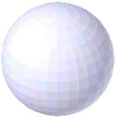
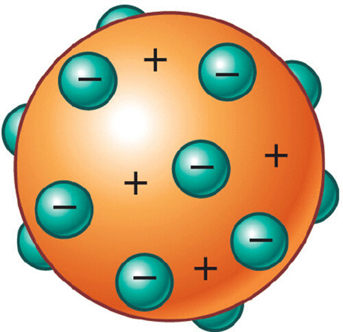
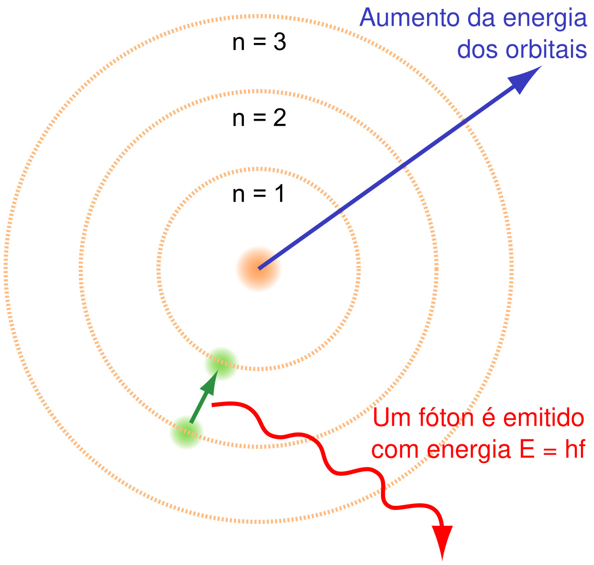

🎯 O que é um átomo?
O átomo é a menor partícula que mantém as propriedades de um elemento químico. A palavra vem do grego atomos, que significa "indivisível".
Por milênios, os humanos tentaram entender a natureza da matéria. Hoje, sabemos que o átomo não é indivisível — ele é composto por prótons, nêutrons e elétrons.
🔸 Origens: Demócrito e Leucipo (Século V a.C.)
Antes mesmo da ciência moderna, os filósofos gregos já pensavam na estrutura da matéria.
Leucipo e seu discípulo Demócrito propuseram a ideia de que toda matéria é feita de pequenas partículas indestrutíveis chamadas átomos.
Eles acreditavam que:
- Os átomos são eternos e indestrutíveis.
- Diferentes arranjos de átomos criam diferentes substâncias.
- As propriedades da matéria dependem do formato e movimento dos átomos.
Apesar de sua genialidade, essa teoria era baseada apenas em raciocínio filosófico — sem evidências experimentais.
🔸 Modelo de Dalton (1808)
John Dalton foi o primeiro cientista a propor um modelo atômico com base em experimentos.
Sua teoria, conhecida como modelo da bola de bilhar, dizia que:
- Todo elemento é formado por átomos idênticos.
- Átomos de diferentes elementos têm massas diferentes.
- Átomos não podem ser criados, destruídos ou divididos.
- Reações químicas envolvem rearranjo de átomos.
Esse modelo foi um grande avanço, mas tinha limitações: não explicava a estrutura interna do átomo nem a existência de íons.

🔸 Modelo de Thomson (1897)
J.J. Thomson descobriu o elétron em 1897, provando que o átomo não era indivisível.
Seu modelo, chamado de “pudim de passas”, propunha que:
- O átomo é uma esfera positiva com elétrons espalhados por dentro.
- A carga positiva está distribuída uniformemente.
- Os elétrons são partículas negativas em movimento.
Embora fosse um passo importante, esse modelo não explicava a estrutura nuclear.

🔸 Modelo de Rutherford (1911)
Ernest Rutherford realizou um experimento com partículas alfa e folhas de ouro, descobrindo que:
- O núcleo é pequeno, denso e positivamente carregado.
- A maior parte do átomo é vazio.
- Os elétrons orbitam o núcleo em grandes distâncias.
Esse modelo, chamado de “modelo planetário”, introduziu a ideia de núcleo, mas não explicava por que os elétrons não caem no núcleo.

🔸 Modelo de Bohr (1913)
Niels Bohr melhorou o modelo de Rutherford ao introduzir a ideia de níveis de energia.
Seu modelo dizia que:
- Os elétrons orbitam o núcleo em camadas fixas (órbitas).
- Cada órbita tem uma energia específica.
- Os elétrons só podem mudar de órbita ao absorver ou emitir energia.
Esse modelo explicou muito bem o espectro de emissão do hidrogênio, mas falhou com átomos maiores.
Hoje, sabemos que os elétrons não orbitam como planetas — eles estão em nuvens de probabilidade, mas o modelo de Bohr ainda é usado para ensinar a estrutura do átomo.

💡 Dica Final: Evolução do Conhecimento
Cada modelo atômico foi um passo rumo à verdade, mas todos foram superados por novos experimentos.
Isso mostra que a ciência é um processo contínuo: testamos, aprendemos e evoluímos.
Atualmente, usamos o modelo quântico, que descreve os elétrons como ondas de probabilidade em torno do núcleo.